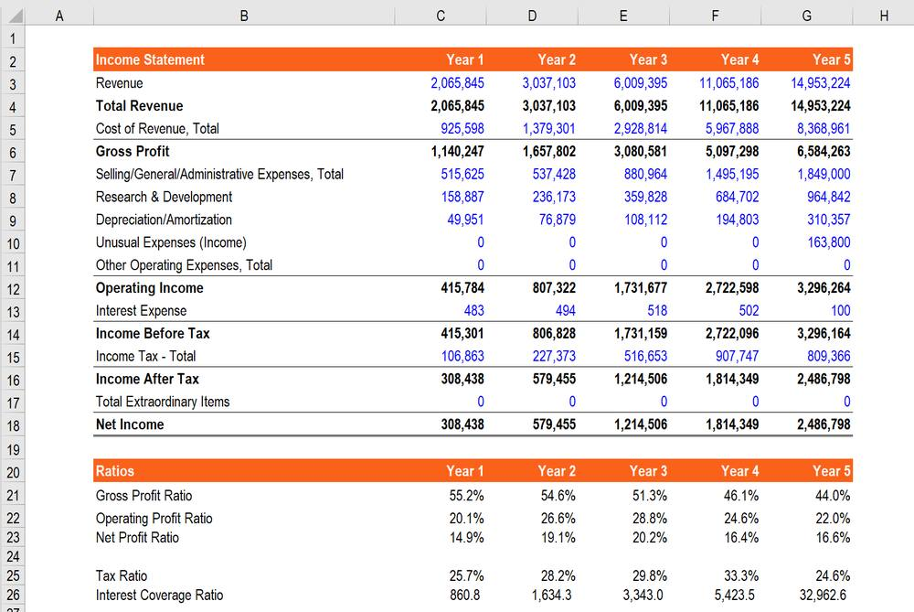

第 1 页 · 项目一
项目一
财务大数据分析
认知
Financial Big Data Analytics
理解大数据核心特征 · 掌握财务分析演进路径 · 建立数据驱动决策思维
知识目标
理解核心特征
能力目标
掌握分析方法
素养目标
数据驱动思维
第 2 页 · CONTENTS
CONTENTS
目录
01
大数据认知
大数据的定义与核心特征
5V特征体系详解
大数据在财务分析中的应用
学习目标：掌握大数据核心特征
02
财务分析认知
财务分析的基本概念与方法
四大传统分析方法
传统财务分析的四大局限性
理解传统财务分析局限
03
财务大数据分析认知
财务大数据分析的含义与优势
四大核心优势
四大内容领域详解
建立数据驱动决策思维
第 3 页 · 01
01
TASK 01 · 任务一
大数据认知
理解大数据的定义、核心特征
及其在财务分析中的应用价值
定义与特征
多维定义与5V体系
应用场景
财务分析三大应用
第 4 页 · Task 01 · Big Data Definition
Task 01 · Big Data Definition
大数据的定义与核心特征
多维定义视角
ISO
国际标准化组织
从技术实现维度提出：大数据是 "需要新型计算架构处理的数据集合，其规模、复杂性或传输速度超出传统系统处理能力"
UN
联合国数字经济报告
从社会价值创造角度界定：大数据是 "通过跨域融合与智能分析，能够增强全球可持续发展决策能力的信息资源体系"
CN
我国《促进大数据发展行动纲要》
融合产业特征：大数据是 "以容量大、类型多、存取速度快、应用价值高为核心特征的新一代信息技术"
业界共识：三位一体的定义要素
1
数据维度
突破传统数据库
处理阈值
2
技术维度
采用分布式架构
进行加工
3
价值维度
实现数据洞见到
商业价值的转化
核心要义：大数据技术以海量数据为基础，通过数据分析、挖掘和预测等手段，为企业决策提供支持
图1-1 财务大数据的5V特征体系
Volume
规模
Variety
多样
Velocity
速度
Value
价值
Veracity
质量
第 5 页 · Task 01 · 5V Characteristics (Part 1)
Task 01 · 5V Characteristics (Part 1)
大数据的5V特征详解（一）
V1
Volume
数据规模
数据量巨大
大数据时代，数据量已达到前所未有的规模。过去以 GB（吉字节） 为单位的数据存储，现在已升级到 TB（太字节）、PB（拍字节）甚至EB（艾字节） 级别。
GB
吉字节
TB
太字节
PB/EB
拍/艾字节
案例：吉利汽车钱塘基地
年产能10万台，单条生产线每日产生结构化与非结构化数据达 数十TB级别 ，远超传统数据库处理极限
挑战：面对庞大的数据量，传统数据处理方式已无法胜任，需要采用分布式存储等新技术应对挑战
V2
Variety
形态多样性
数据类型多样
大数据不仅数量庞大，形态也多种多样。 非结构化数据占数据总量的绝大部分 ，不同类型的数据需要不同的处理方式，要求数据处理系统具备更强的兼容性和灵活性。
结构化数据
Excel表格、数据库规范数据
半结构化数据
XML、JSON格式文件
非结构化数据
文本、图片、视频等
案例：泽达半导体
生产与研发过程中产生极为复杂的数据形态：包括ERP和MES系统中 结构化数据 、晶圆检测图像等 非结构化文件 ，以及供应链 半结构化数据
解决方案：建设一体化数据平台，统一主数据标准，实现对多源异构数据的整合管理与全生命周期溯源
第 6 页 · Task 01 · 5V Characteristics (Part 2)
Task 01 · 5V Characteristics (Part 2)
大数据的5V特征详解（二）
V3
Velocity
时效特性
数据处理速度快
时效特性强调数据从产生到分析应用的 时间效率 。大数据环境下，数据生成速度快、处理时效要求高。
毫秒级
股票交易
小时/天级
月度经营分析
案例：龙兴航空WQAR测试
5G无线快速存取记录器在试飞试验中，仅用 5秒 完成飞行数据的完整下传与分析，要求整个数据处理链路具备 毫秒级响应能力
V4
Value
价值性
数据价值密度低但价值高
大数据的一个重要特点：在庞大的数据总量中， 真正有价值的信息往往只占很小一部分 。就像沙里淘金，需要通过数据分析技术从海量数据中筛选出有价值的信息。
数据总量
海量数据
价值信息
少量精华
↓ 分析挖掘 ↓
巨大回报
案例：巴泰医疗创新器械研发
通过大数据分析模型，从海量实验数据中成功识别出有效的药物涂层与球囊结构的优化组合，研发出被誉为 "全球第二、中国首款" 的创新医疗器械
V5
Veracity
质量可信度
数据真实可靠且准确
数据质量是大数据分析的基础，必须确保数据的 完整性、一致性、准确性和时效性 ，才能为决策提供可信依据。
完整性
数据无缺失
一致性
逻辑无矛盾
准确性
数值无偏差
时效性
信息不过期
案例：杭州经开区芯片制造
龙头企业实施军工级数据治理标准，确保跨工序、跨时段的每一份数据都真实、一致、可靠，为纳米级工艺控制提供可信基石
第 7 页 · Task 01 · Applications
Task 01 · Applications
大数据在财务分析中的应用
历史演进：从手工记账和算盘计算 → 电子表格（VisiCalc、Excel）→ ERP系统 → 大数据技术。大数据技术打破了数据边界，让财务分析从 "向后看" 的记账和报告，转向 "向前看" 的预测和决策支持。
智能预测与预算
× 传统方式局限
高度依赖历史财务数据和分析师经验判断，模型相对简单，难以捕捉复杂市场环境下的非线性变化
✓ 大数据优势
整合更多维度的内外部数据，利用机器学习算法构建更精准的预测模型
图1-3 现金流预测精度对比
动态风险监控
× 传统方式局限
主要依赖企业定期提供的财务报表和尽职调查报告，信息存在明显滞后性，风险识别和应对往往是被动的
✓ 大数据优势
实时、动态的风险监控成为可能。银行可以实时监控贷款企业的经营状况，包括纳税申报数据、水电费缴纳情况、供应链上下游企业的支付记录、网络舆情等
预警机制：一旦发现异常（如纳税额骤降、供应商投诉增多），系统会自动下调其信用评级并触发预警，使风险控制从"事后补救"转变为"事中干预"
精细化成本与盈利分析
× 传统方式局限
受限于数据颗粒度，往往只能围绕产品线、部门或门店等较为宏观的维度展开核算，难以进一步穿透至单个SKU或具体客户层级
✓ 大数据优势
通过集成与处理更细粒度的运营数据，推动成本与盈利分析向精细化、深度化方向发展，实现微观层面洞察
图1-5 大数据应用于精细化成本与盈利分析
SKU级
客户级
渠道级
第 8 页 · 02

02
TASK 02 · 任务二
财务分析认知
理解传统财务分析的基本概念、方法
及其局限性
基本概念
财务分析定义与目标
分析方法
四大传统分析方法
局限性
四大核心局限
第 9 页 · Task 02 · Basic Concepts
Task 02 · Basic Concepts
财务分析的基本概念与方法
财务分析的定义
财务分析是以企业财务报告及相关资料为依据，运用一系列专门的分析技术与方法，对经济组织过去和现在的 筹资、投资、经营及分配 等活动的盈利能力、营运能力、偿债能力与发展能力进行系统评估的经济管理活动。
根本目标
向企业 利益相关者 （包括投资者、债权人、管理层及监管机构等）提供有助于决策的信息支持
利益相关者
投资者
投资决策
债权人
信贷决策
管理层
经营管理
监管机构
合规监管
传统财务分析方法
1
比较分析法
具体内容：横向对比（行业对标）、纵向对比（历史趋势）
举例：本年度毛利率与去年同期对比分析
2
比率分析法
具体内容：财务比率分析（偿债、营运、盈利、成长）
举例：流动比率 = 流动资产 / 流动负债
3
趋势分析法
具体内容：分析多期数据变化趋势
举例：销售收入连续5个月下降
4
因素分析法
具体内容：拆解影响某一指标的各项因素
举例：分析毛利率下降原因：销售收入下降？销售成本上升？
方法特点：传统财务分析经过长期发展，形成了一套系统化的分析方法体系，但在快速变化的商业环境中，其内在局限性日益显现
第 10 页 · Task 02 · Limitations
Task 02 · Limitations
传统财务分析的四大局限性
01
信息时效滞后
决策呈现"事后性"
传统财务分析主要基于定期编制的财务报表，信息更新周期通常以 月、季或年 为单位，存在明显的滞后性。
案例：某零售企业
在第三季度财报中发现库存积压问题，而该问题实际在 第二季度末已初步显现 。由于信息传递的延迟，管理层错失了最佳调整时机，只能进行事后补救。
02
分析维度单一
难以全面评估企业状况
传统分析过度依赖企业内部的结构化财务数据，忽视了大量的 非财务信息和外部环境因素 。
案例：利润增长的可持续性
企业的财务报表可能显示利润增长，但如果同时期社交媒体上出现大量负面评价，或者竞争对手推出了颠覆性产品，那么这种利润增长的 可持续性就值得怀疑 ，而这些重要信息恰恰不在传统分析的视野范围内。
03
分析视角封闭
缺乏行业与宏观联动
传统财务分析往往局限于企业内部数据，缺乏与 行业发展趋势、宏观经济环境、竞争对手动态 等外部信息的有机结合。
案例：销售费用率分析
当发现企业销售费用率高于行业平均水平时，传统分析可能简单地归因于 内部管理效率低下 ，而实际原因或许是竞争对手正在发动大规模营销攻势，企业为了维持市场份额不得不增加营销投入。
04
预测能力有限
难以应对结构性变化
基于历史数据的线性预测模型，在面对 市场环境的剧烈变化、技术革新或突发危机 等非线性因素时，其预测准确性会大幅降低。
案例：诺基亚的衰落
诺基亚公司在功能手机时代财务表现优异，但基于历史数据的分析 无法预见智能手机崛起 对其市场地位的强烈冲击。
第 11 页 · 03
03
TASK 03 · 任务三
财务大数据分析认知
理解财务大数据分析的含义、优势与核心内容
含义与优势
四大核心优势
内容领域
四大应用场景
第 12 页 · Task 03 · Definition & Advantages
Task 03 · Definition & Advantages
财务大数据分析的含义与核心优势
财务大数据分析的定义
财务大数据分析是传统财务分析在大数据环境下的重要演进与深化。它指运用大数据技术及相关方法，对内外部来源广泛、结构多元的海量财务及业务数据进行 采集、整合、清洗、分析与可视化呈现 ，从而深入洞察业务实质、识别潜在风险与机遇、并为战略与经营决策提供系统性支持的综合性管理活动。
核心要义：从 "向后看" 的历史总结，转向 "向前看" 的预测与决策支持
传统 vs 大数据财务分析
传统财务分析
内部结构化数据
周期性报告
事后解释
财务大数据分析
内外部多元数据
实时监控
事前预测
四大核心优势
全面性
能够整合企业内部与外部的财务与非财务数据，构建更为完整的企业运营全景视图。财务分析不再局限于孤立的报表项目，而是将财务数据置于 行业生态与商业环境中 进行联动考察。
实时性
支持对业务活动的实时监控与动态分析，显著提升决策响应速度。财务职能从 周期性的核算与报告 ，转向可实时介入业务过程的决策支持角色。
预测性
借助机器学习等算法模型，从历史与实时数据中识别规律与趋势，提升对未来业绩与风险的前瞻判断能力，推动财务分析重心从 "事后解释" 向 "事前预测" 延伸。
洞察性
通过关联分析、聚类分析等高级分析方法，揭示数据背后复杂的业务逻辑与因果关系，能够回应传统分析难以深入的 结构性与驱动性问题 。
第 13 页 · Task 03 · Core Content Areas
Task 03 · Core Content Areas
财务大数据分析的四大内容领域
收入与利润的精细化分析
财务大数据分析打破了传统收入利润分析的粗放模式，实现了从宏观到微观的多维度精细剖析。除了分析企业整体的收入和利润情况外，更深入到 产品品类、客户群体、销售渠道、地域分布 等具体维度，构建全方位的盈利能力分析体系。
案例：迈瑞医疗
通过建立智能化的业财一体化大数据平台，能够对每一款医疗设备在不同市场、不同客户群体中的收入贡献进行精准分析，实时追踪不同型号设备的使用频率、耗材消耗情况以及后续维护服务收入，精确计算出每个产品线的 全生命周期利润贡献 。
成本与费用的精准管控
传统成本费用分析往往停留在总额控制和预算执行层面，而财务大数据分析则能够深入到成本发生的各个环节， 识别关键的成本动因 ，实现更加精准的成本管控。通过整合生产、采购、人力等多维度数据，建立科学的成本分析模型，为企业成本优化提供数据支撑。
案例：吉利汽车钱塘基地
通过整合冲压、焊装、涂装、总装四大工艺环节的实时传感数据与物料消耗系统（MES）的财务数据，构建了工艺-成本动态关联模型。分析发现，焊装车间机器人焊点的电压微小波动会导致部分焊点强度不足， 单台车平均增加成本约200元 。
营运资本的动态优化
财务大数据分析实现了对应收账款、存货、应付账款等营运资本要素的 实时监控和动态优化 。通过构建智能化的营运资本管理体系，企业能够显著提升资金使用效率，降低资金占用成本，增强现金流管理水平。
案例：杭州港下沙综合作业区
通过"5G+智慧码头"系统，实现了与腹地企业、物流公司、船闸及宁波舟山港的数据实时共享与协同。这套系统能基于企业的出货计划、船期和实时路况，智能规划最优的集疏港路线与时间， 平均可降低20%的综合物流成本 。
风险与合规的智能监控
财务大数据分析在风险识别和合规监控方面展现出独特优势。通过整合内部交易数据、外部舆情信息和监管政策变化等多源数据，构建 全方位的风险预警体系 ，实现风险早识别、早预警、早处置。
案例：浙江巴泰医疗科技有限公司
在创新医疗器械的临床试验与注册申报过程中，利用大数据平台构建智能监控系统，当系统发现某项临床指标的异常趋势与历史数据模型出现显著偏离时，会自动向项目组与合规部门预警，帮助企业在研发阶段 提前规避可能的技术与合规风险 。
第 14 页 · 素养提升
素养提升
大数据赋能乡村振兴
"共富账本"——以浙江安吉为例
在数字经济时代，大数据技术不仅在企业财务分析中发挥重要作用，也正在深刻改变着中国乡村的发展模式。
浙江安吉作为"绿水青山就是金山银山"理念的发源地，通过建立"共富账本"大数据平台，实现了对乡村资源、产业、收入的精准监测与分析，为乡村振兴提供了有力的数据支撑和决策支持。
精准监测
乡村资源动态
产业分析
特色产业发展
收入追踪
共富进程评估
扫码阅读完整案例 · 探索大数据在乡村振兴中的应用实践